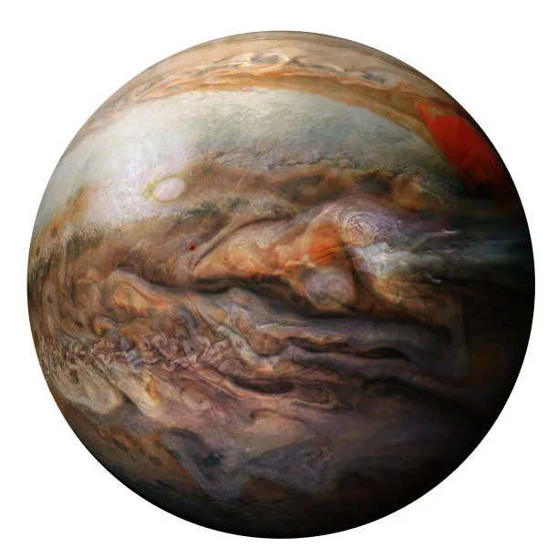

Jupiter is the fifth planet from the Sun and is the largest planet in the Solar System. It is a gas giant composed primarily of hydrogen and helium and does not have a solid surface like Earth or Mars. Jupiter has a diameter of about 139,820 kilometers, making it more than 11 times wider than Earth. Its enormous size gives it a powerful gravitational influence over many objects in the Solar System.
Jupiter has a thick atmosphere made mostly of hydrogen and helium. Its atmosphere contains colorful bands of clouds that move around the planet at extremely high speeds. Jupiter experiences enormous storms, including the famous Great Red Spot, a massive storm that has existed for centuries. Winds on Jupiter can reach speeds of hundreds of kilometers per hour.
Jupiter does not have a solid surface that a spacecraft or person could stand on. Instead, its atmosphere becomes increasingly dense as you travel deeper into the planet. Eventually, the pressure and temperature become extreme. Scientists believe Jupiter has a dense core surrounded by layers of metallic and liquid hydrogen.